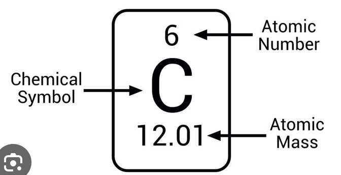
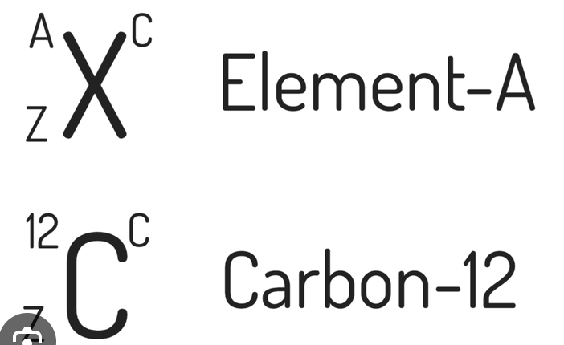
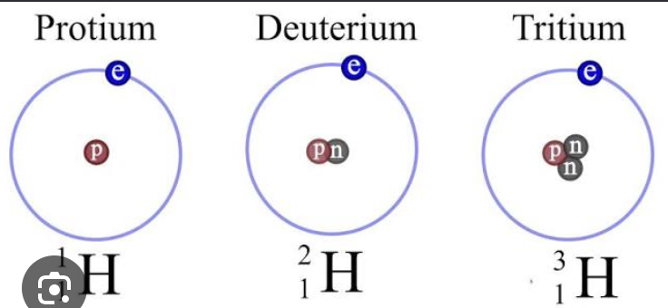

Lecure 9-9-2026
This material is going to be on exam 2, Chapter 1’s through 3 will be exam 1 which is next Tuesday.
Chapter 4
Elements
- All matter can be broken down chemically into about 100 different elements.
- Compounds are made by combining atoms of the various elements
- 9 elements account form most of the compounds found in the earth’s crust.
Elements in the Human Body
- Oxygen, carbon, hyrdrogen, and nitrogen form the basis of all biologically important molecules.
- Some elements found in trace amounts (called trace elements) are crucial for life even though they are present in small amounts.
Symbols for Elements
- Chemists have a set of abbreviations or element symbols for the chemical elements:
For example Hydrogen is represented by the symbol \(\mathrm{H}\)
- Some names came from weird stuff so like iron came from some ferron or something like that so it has the symbol \(\mathrm{Fe}\)
Natural Materials
- Most natural materials are mixtures of pure subsstances
- Pure substances are either elements or combinations of elements called compounds.
- A given compound always contains the same proportions (by mass) of the elements. For example water always contains 8 g of oxygen for every 1 g of hydrogen. Or carbon dioxide always contains 2.7g of oxygen for every 1 g of carbon.
This principle is known as the law of constant composition.
Dalton’s Atomic Theory
This is the classical atomic theory and differs slightly from modern atomic theory.
- Elements are made up of tiny particles called atoms.
- All atoms of a given element are identical.
- The atoms of a given element are different from those of any other elements.
- Atoms of one element can combine with atoms of other elements to form compounds. A given compound alwasy has the same relative numbers and types of atoms.
- Atoms are individisible in chemical processes, that is atoms are neither created nor destroyed in a chemical reaction. A chemical reaction simply changes the way the atoms are grouped together.

The Atomic Number of an element refers to the number of protons in it’s nucleus.
Formulas of Compounds
- A compound is a distinct substance composed of the atoms of two or more elements and always contains the same relative masses of those elements.
- The types of atoms and the number of each type in each unit (molecule) of a given compound are conveniently expressed by a chemical formula.
Rules for Writing Formulas
- Each atom present is represented by its element symbol
- The number of each type of atom is indicated by a subscript on the element symbol.
- When only one atom of a given type is present no subscript is needed.
E.g.
\[ \mathrm{NO} \]
a chemical formula with one Nitrogen atom and one Oxygen atom.
Or For water:
\[ \mathrm{H_2O} \]
Indicates two hydrogen atoms and one oxygen atom.
Rutherford’s Gold Foil Experiment
Is what we derived the nucleus from. Basically stuff bounced backwards which suggests that the center of an atom is larger than a smaller particle.
The Nuclear Model
- The \(\alpha{}\) particles passed directly throught the foil because the atom is mostly empty space.
- The deflected particles came into contact with the center of the atom (the nucleus)
Protons and Neutrons
- A proton has the same size as a neutron and the proton has a positive charge equal to the magnitude of the electrons negative charge.
Isotopes
- Isotopes are atoms with the same number of protons but differin numbers of electrons.
- The number of protons in a nucleus is called the atom’s atom number.
Isotope Notation
- The number of protons in a nucleus is called the atom’s atomic number
- THe sum of the number of neutrons and the number of protons in a nucleus is called the atom’s mass number.
Where, 1. is A and 2. is B
\[ A + Z = \space \text{The Atomic Mass Number} \]

\[ \newline \newline \newline \]

The Periodic Table
- Groups have elements with similar chemical properties, columns represent the groups of the periodic table.
- Periods are the rows of elements
Groups
A family of elements with similar chemical properties that lie in the same vertical column on the periodic table.